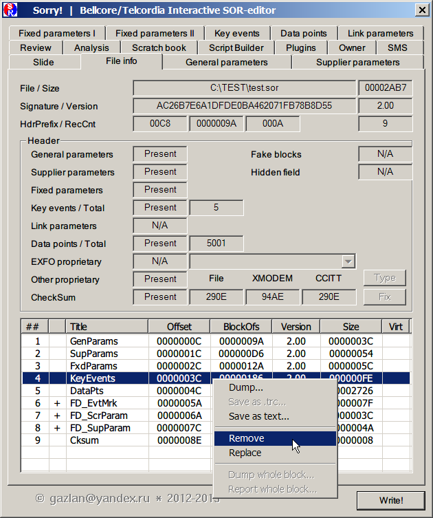

|
”даление (физическое) таблицы ивентов производитс€ на вкладке File info.
ѕосле выбора строки с именем блока 'KeyEvents', по правому клику по€витс€ контекстное меню. ¬ыбрать в нем пункт 'Remove' и нажать 'Write'.
–екомендуетс€ не перезаписывать текущий файл, а сохранить изменени€ под новым именем.

|